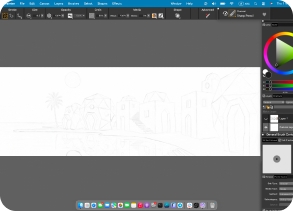
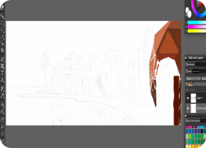
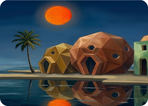

Under the Crimson Moon
This contemporary coastal scene brings together geometric houses and the natural landscape in a simple and harmonious composition. The angular architectural forms contrast with the softer lines of the shore and the calm expanse of the sea, creating a dialogue between structured architecture and the fluidity of nature.
Simplified surfaces and solid colors, combined with subtle painterly textures, give the work a minimalist yet tactile quality. The repetition of architectural forms and rhythmic lines guides the eye along the shoreline, reinforcing a sense of stillness and calm.
Rather than depicting a specific place, the work offers a personal interpretation of living in harmony with nature, simplicity, and tranquility.